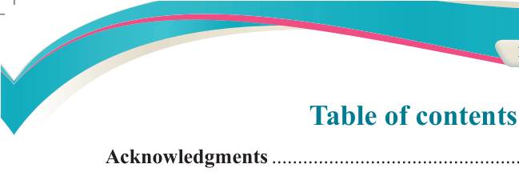
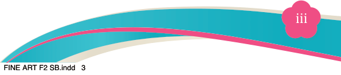

Table of contents

Acknowledgments....................................................................................v
Preface......................................................................................................vi
Chapter One
Theories of Art..........................................................................................1
Concept of the theory of art......................................................................................1
Formalism theory of art............................................................................................1
Types of formalistic artworks...................................................................................2
Principles of formalism theory.................................................................................4
Procedures for creating artwork by using formalism theory....................................4
Analysing artwork by using formalism theory.........................................................6
Functionalism theory of art.......................................................................................7
Types of functionalist artworks ...............................................................................8
Principles of functionalism theory..........................................................................14
Procedures for creating artwork by using functionalism theory.............................15
Analysing artwork by using functionalism theory..................................................16
Purposes of theories of art..............................................................................................17
Application of the theory of art in daily life...............................................................17
Chapter Two
Still life composition...............................................................................19
Concept of still life composition.............................................................................19
Categories of still life composition ..........................................................................20
Significance of still life composition......................................................................23
Principles of still life composition..........................................................................24
Guiding procedures to compose a still life composition........................................26
Still life painting composition...................................................................................29
Procedures for composing still life painting ..............................................................29
Chapter Three
Simple functional drawing....................................................................35
Concept of simple functional drawing....................................................................35
Characteristics of simple functional drawing ........................................................36
Types of simple functional drawing ......................................................................38
Materials and Tools.................................................................................................40
Significance of simple functional drawing.............................................................40